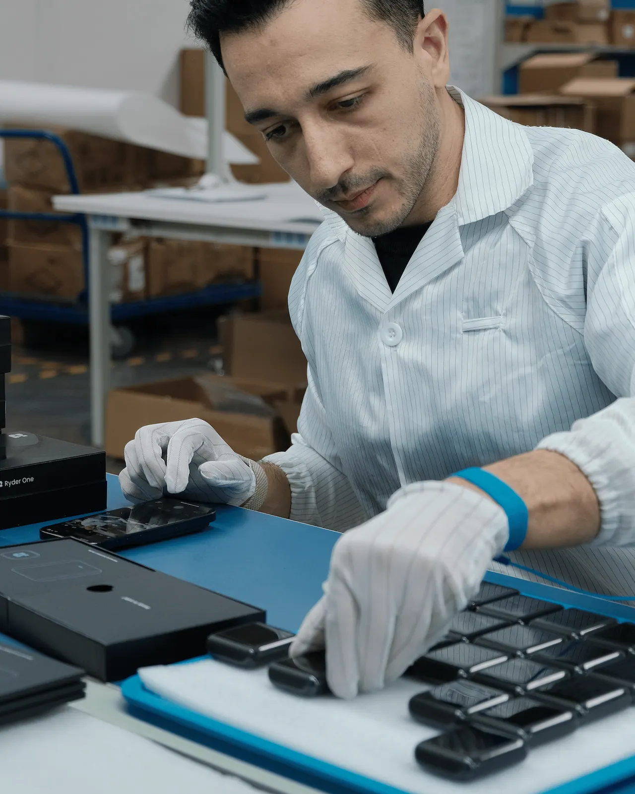

I take hardware from the first sketch to mass production.
French product engineer and designer, based in Singapore. Ten years building consumer electronics between Hong Kong and Shenzhen: industrial design, electronics, packaging, factories. I also photograph what I ship.
- 200,000+
- devices shipped
- 10+ years
- building consumer hardware
- Red Dot
- Design Award 2026

What I do
Pick one to see that work across every company.
Larkin is an AI wristband with no screen and nothing to press. It listens through your day and gives it back as something you can read, learn from and build on. I'm building all of it: the band, the app, the AI behind it, the branding and the website. A working MVP is already done, and I built it myself.
Ryder
Co-founder & CPOSingapore, with monthly trips to Shenzhen at peak
ryder.idRyder One is a crypto hardware wallet without a seed phrase. Instead of writing 24 words on paper, you back it up by tapping Recovery Tags or with people you trust. I co-founded the company and led product end to end: the device, the app, the recovery experience, packaging, manufacturing and launch.
Achievements
- $3.2M seed round led by Tim Draper
- 2,000+ units shipped
- Red Dot Design Award 2026
- 4.8 rating on Trustpilot
- Halborn security audit: 0 critical, 0 high findings
Responsibilities
- Product vision and positioning
- Hardware UX and industrial design direction
- Manufacturing with our suppliers in China: DFM, tooling, assembly, QC and ramp-up
- Led our UX/UI designer across the iOS and Android apps
- Recovery Tags, packaging and accessories
- Website, launch, product photography and video direction
Technical challenges
- An EAL6+ secure element, encrypted NFC, Qi charging and a 1.6" AMOLED touch screen in a pocket-size aluminium and glass body
- Wireless charging that still works on a dead battery
- Battery-free Recovery Tags that survive being dropped, soaked or lost
- Setup in under a minute, with every transaction confirmed on the device
- Matching colour and finish across anodized aluminium, glass and polycarbonate
Development
Industrial & Mechanical Design
Electronics
App & Device UX
Packaging
Manufacturing
Fully Functional Prototypes
Injection Molding & Finishing
Mass Production
Manufacturing & Design Team
Launch
Product Unboxing
Transcelestial
Technical Program Manager, Manufacturing & SoftwareSingapore
transcelestial.comTranscelestial builds wireless laser communication terminals: fibre-speed links through the air, without digging trenches or buying spectrum. The long-term goal is a laser network in space. I joined after Entrepreneur First to help move the CENTAURI terminals from lab builds to a production process that hits its targets.
Achievements
- Scope grew from manufacturing to manufacturing and software after 9 months
- Set the delivery cadence for four engineering teams
Responsibilities
- Coordinated software, PAT (pointing, acquisition and tracking), electrical and mechanical teams
- Production targets and yield
- Action plans, and flagging execution risks early
- Technical reviews to keep improving yield and manufacturing processes
- From May 2022: product roadmap and R&D initiatives
Technical challenges
- Laser terminals that have to stay aligned over long distances, outdoors
- Going from hand-built units to a repeatable, measurable production process
- Keeping four disciplines on one roadmap
Manufacturing
Lab and team
Soundbrenner
Founding Engineer → NPI Engineer → Head of Hardware ProductHong Kong and Shenzhen, half my time in each
soundbrenner.comSoundbrenner makes wearables for musicians. I joined in Hong Kong as the first engineer, when nothing had shipped yet, and left as Head of Hardware Product after 200,000+ devices. The big one was Soundbrenner Core, the first smartwatch for musicians: a vibrating metronome, a contact tuner and a dB meter in one. Two years from concept to mass production.
Achievements
- 200,000+ devices shipped
- $1.5M in Kickstarter pre-orders, the most crowdfunded project in Hong Kong
- 1 patent, the magnetic lock
- 500,000 monthly active users on the Soundbrenner app
- Retail displays in 130+ stores in the US, Germany and Japan
Responsibilities
- Product development from concept to mass production and launch
- Led a cross-functional team in Hong Kong and Shenzhen: mechanical, electrical, firmware, industrial design
- Owned the hardware roadmap
- Main contact with our OEMs in China
- Supply chain: second sources, lead times, costs and MOQs on a US$1M+ yearly budget
- EVT, DVT and PVT builds, root-cause analysis and corrective actions
- Early on, firmware in C: memory, battery management, Bluetooth with the apps
Technical challenges
- A 7G ERM vibration motor, 7x stronger than the average smartwatch
- A magnetic lock so the watch pops out of its base and becomes a contact tuner
- Keeping it thin despite both
- Firmware syncing up to 5 devices with less than 15ms delay, plus accurate tuning
- 5+ days of battery life in daily use
Development
Industrial & Mechanical Design
Electronics
Packaging
Accessories
Manufacturing
Fully Functional Prototypes
Injection Molding & Finishing
Mass Production
Manufacturing & Design Team
Launch
Product Unboxing
On video
Design, manufacturing and launch of Ryder One, on the Ryder channel.
Writing
Product photography
I shoot the products I make. Studio, close-ups and live shots, all by me.
I grew up in the French countryside and studied engineering in Paris. Since 2015 I've lived between Hong Kong, Shenzhen and Singapore, building products with the people who manufacture them.
I like the whole thing: the first sketch, the DFM meeting that kills half the ideas, the first 20 units off the line, and the photo that finally makes it look as good as it is.
Before
- 2021Entrepreneur First, Singapore Founder in residence. Started a solar venture. It didn't work out, I learned a lot.
- 2017Sofar Sounds, Hong Kong City leader. Launched it in Hong Kong on the side, monthly shows, all sold out.
- 2015Brandbodh, Pune Project manager assistant at a design and communication studio.
- 2013TEDxECE, Paris Founded the first TEDx at my engineering school. 8 speakers, 150 attendees.